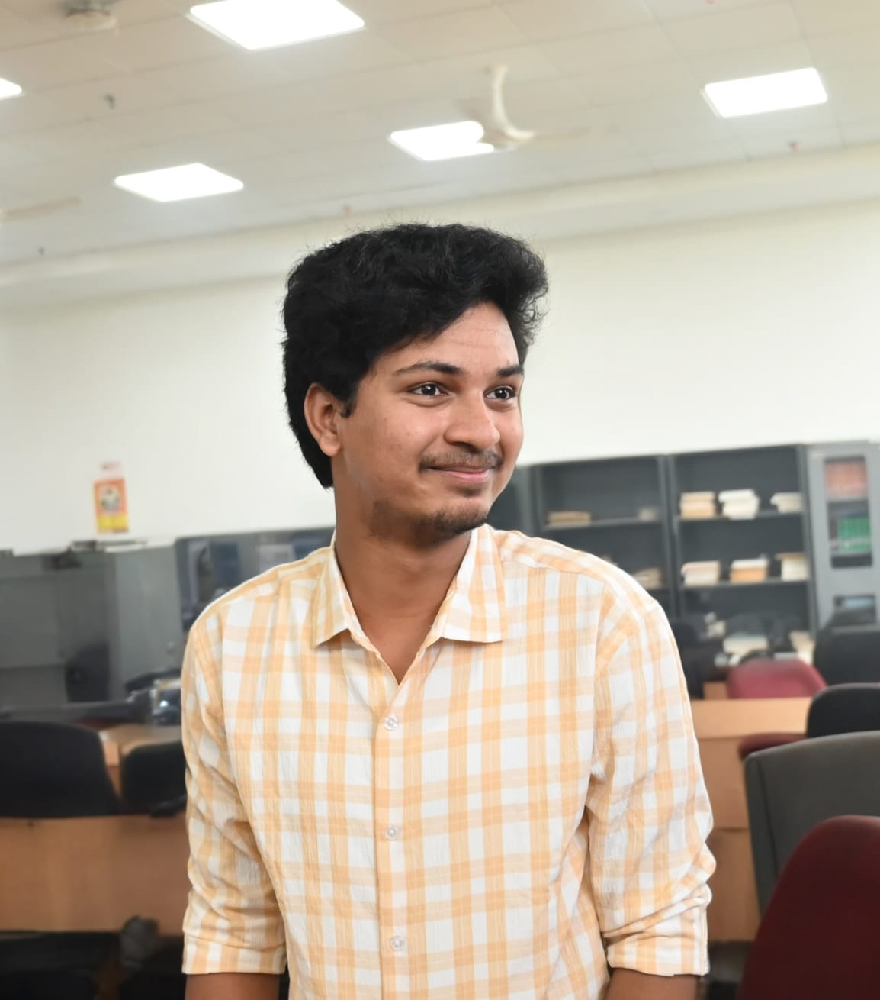

Aspiring VLSI Engineer
I am a highly motivated and enthusiastic Electronics and Communication Engineering (ECE) undergraduate currently pursuing my B.Tech from IIIT Sri City, with a strong foundation in digital and analog electronics, embedded systems, and object-oriented programming.
My academic journey has equipped me with solid technical skills in C++, Verilog, embedded system design, and FPGA-based development, along with hands-on experience developing innovative projects such as Smart Car Parking System, Smart Irrigation System, and FPGA-based games.
As the Lead of the Photography Club (F/Stops), I have developed strong leadership, team collaboration, and creative problem-solving abilities. With a deep interest in semiconductor technologies and digital circuit design, I aspire to build a career as a VLSI Engineer contributing to next-generation integrated circuit systems.
A comprehensive overview of my technical expertise and capabilities
My academic journey and continuous learning path
Currently pursuing Electronics and Communication Engineering.
Showcase of my recent work and technical achievements
An intelligent parking management solution using IoT sensors and microcontrollers.
Automated irrigation system using soil moisture sensors and intelligent water management.
A hardware-implemented arcade-style game using VGA interface on FPGA.
Designed and implemented a Frogger-style game using Verilog on the Basys3 FPGA board with VGA display rendering.
Developed VGA timing controller, game logic, collision detection, and scoring system.
Optimized hardware resource utilization and ensured smooth frame updates for seamless gameplay.
Recognition for leadership and innovation
Photography Club - IIITS
2025-2026Leading the photography club activities, events, and creative initiatives at IIIT Sri City.
Let's discuss opportunities and collaborations